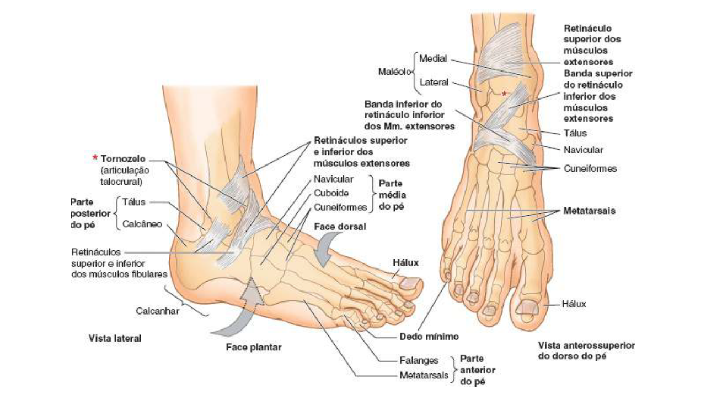

Clinicamente o pé é dividido em três porções: antepé, mediopé e retropé.
Antepé
Constituído pelos metatarsos e falanges.
A articulação entre o mediopé e antepé, articulação tarsometatarsal, também é conhecida como articulação de Lisfranc.
Mediopé
Formado pelos ossos navicular, cubóide e cuneiformes medial, intermédio e lateral.
A principal articulação é entre os ossos navicular (do mediopé) com o tálus e calcâneo (retropé), denominada de articulação taluscalcâneonavicular (local onde tem grande mobilidade para os movimentos de inversão e eversão do pé).
Retropé
O retropé: formado pelos ossos tálus e calcâneo.
A articulação entre o tálus e calcâneo é denominada de articulação subtalar (articulação de Chopart).

MOORE: Keith L. Anatomia orientada para a clínica. 8 ed. Rio de Janeiro: Guanabara Koogan, 2022.